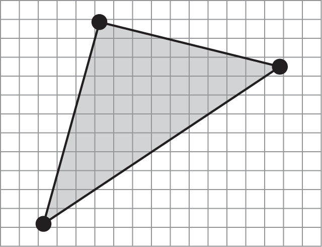

Raster Operations
The pipeline has taken vertex attributes and primitives, and produced fragments.



The Raster Operations stage combines these new fragments with those already in the framebuffer.

There are two primary types of Raster Operation:
- The Depth Test decides which surfaces are in front of others.
- Blending enables the mixing of fragments, giving transparency.